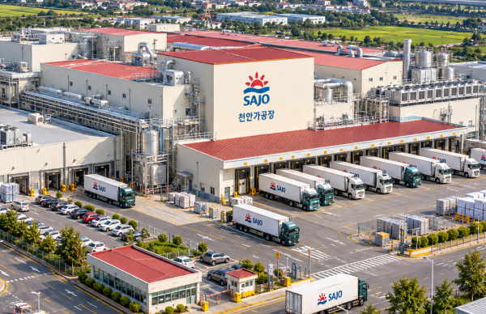

사업영역
사업영역
PROCESSED MEAT육가공사업
좋은 원료와 정직한 기술로
믿을 수 있는 맛을 만듭니다
FOOD BUSINESS
청정 사료로 직접기른 돼지얼리지 않은 부드럽고 신선한 육질
- #완전자동화 도축시설
- #급속냉각터널
- #HACCP
육가공산업의 선두주자인 사조산업(주)천안공장은 1994년에 국내최초로 도축시설의 완전자동화 시스템을 도입하여 국내 육가공산업 수준을 한 단계 끌어 올렸습니다.
또한 최신식 급속냉각터널을 가동하여 고품질의 돈지육을 생산하고 있으며, HACCP 운용평가 상위등급 도축장으로 선정 되었습니다. 위생적으로 가공한 고급 냉장 돈육인 "사조로하이포크"를 국내시장에 공급하고 있으며, 위생 가공설비를 더욱 강화하여 향후 자체 브랜드육의 시장 확대를 꾀하고 있습니다.
CORE STRENGTH
천안공장의 육가공 경쟁력자동화·위생·냉각 인프라를 기반으로 고품질 돈지육을 생산하고 냉장 브랜드육의 시장 확대를 추진합니다.
-
01. AUTOMATION
완전자동화 시스템
1994년 국내최초로 도축시설의 완전자동화 시스템을 도입해 육가공산업 수준을 한 단계 끌어올렸습니다.
-
02. FRESHNESS
급속냉각 품질관리
최신식 급속냉각터널을 가동하여 고품질의 돈지육과 최상의 지육품질을 유지합니다.
-
03. HYGIENE
HACCP 상위등급
HACCP 운용평가 상위등급 도축장으로 선정되었으며 지속적인 위생 투자를 이어가고 있습니다.
MANUFACTURING SITE
공장소개
CANNED SEAFOOD고성공장
바다의 신선함을 건강한 식탁으로
저희 사조는 수산전문업체로서의 선도적 위치에 만족하지 않고 바다의 신선하고 풍부한 영양을 식탁에 전하며 보다 나은 국민 식생활 문화 창조에 앞장서고 있습니다. 고단백 저칼로리 식품인 참치의 대중화를 목표로 참치캔 시장에 진출하여 오랜기간 쌓은 노하우를 바탕으로 품질 좋은 참치캔을 공급하고 있으며, 직접 어획한 "물 좋은" 참치만을 원료로 사용하고 있습니다. 또한 연구소 및 마케팅 공조, 참치캔을 포함한 수산물제조 및 원료 Sourcing 인프라를 활용, 지속적인 신제품 개발 및 수산가공식품 신규 시장 진출로 매출확대 및 수익성 향상에 집중하고 있습니다.
- 생산품목
- 돈지육
- 특징
- 최신 급속냉각터널 가동으로 최고의 지육품질 유지
- 주소
- 충남 천안시 서북구 직산읍 성진로 378
원료에서부터 제조, 유동단계까지 발생할 수 있는 위해요소를 각 단계에서 세밀히 분석하고 엄격히 사전관리하여 안전한 식품을 제조하는 과학적인 위생관리 SYSTEM입니다.